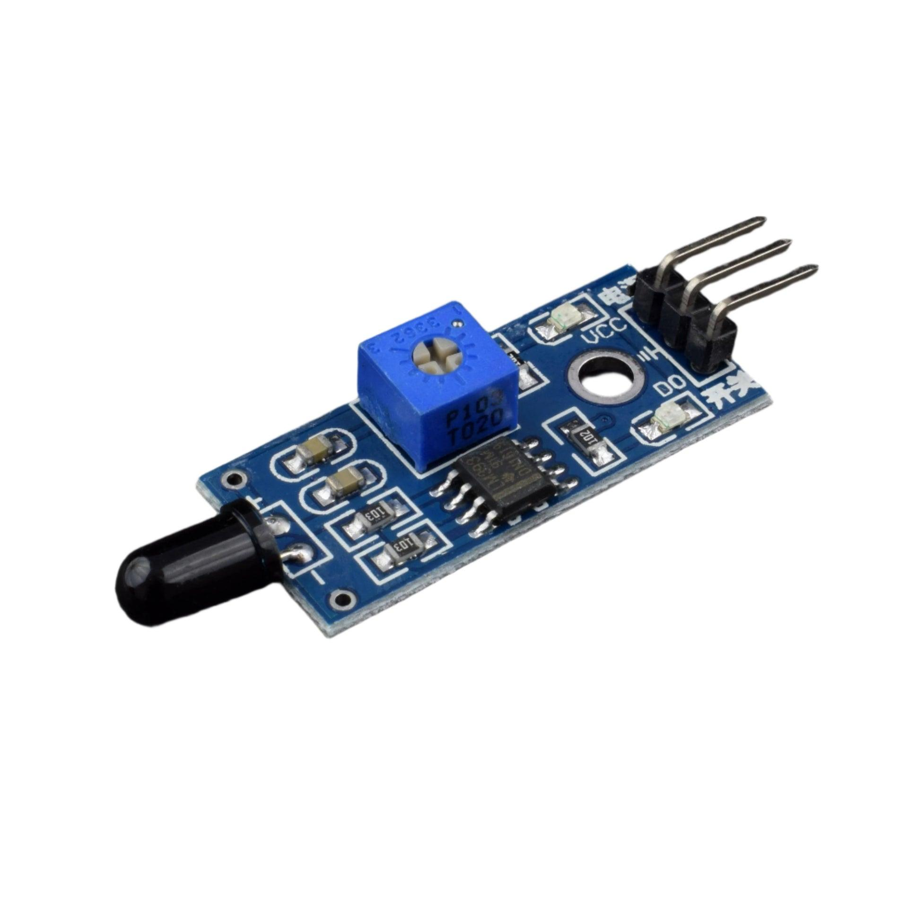
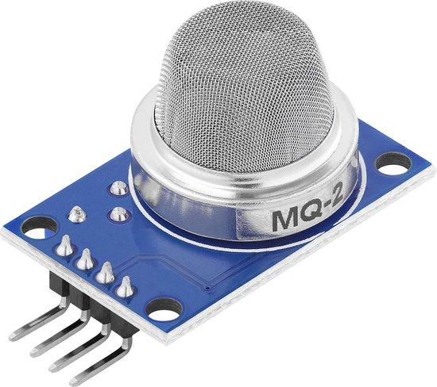
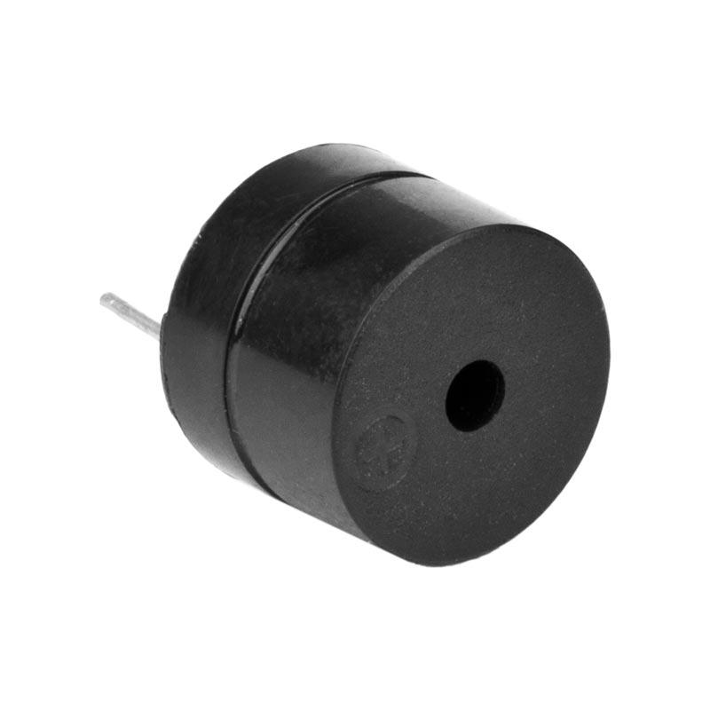
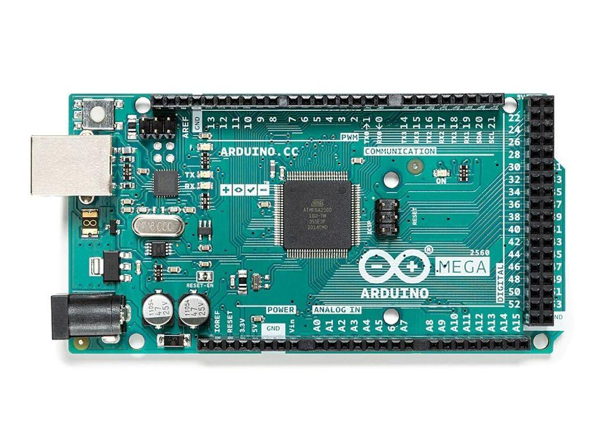
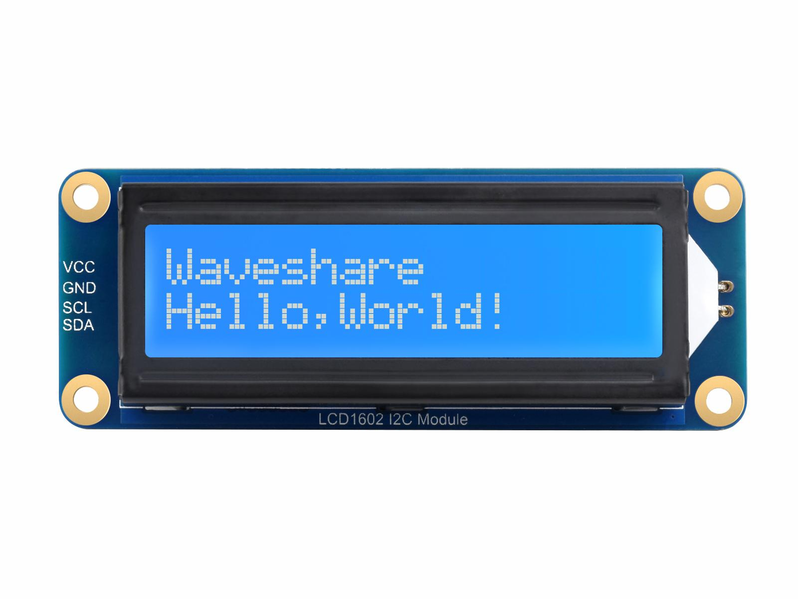
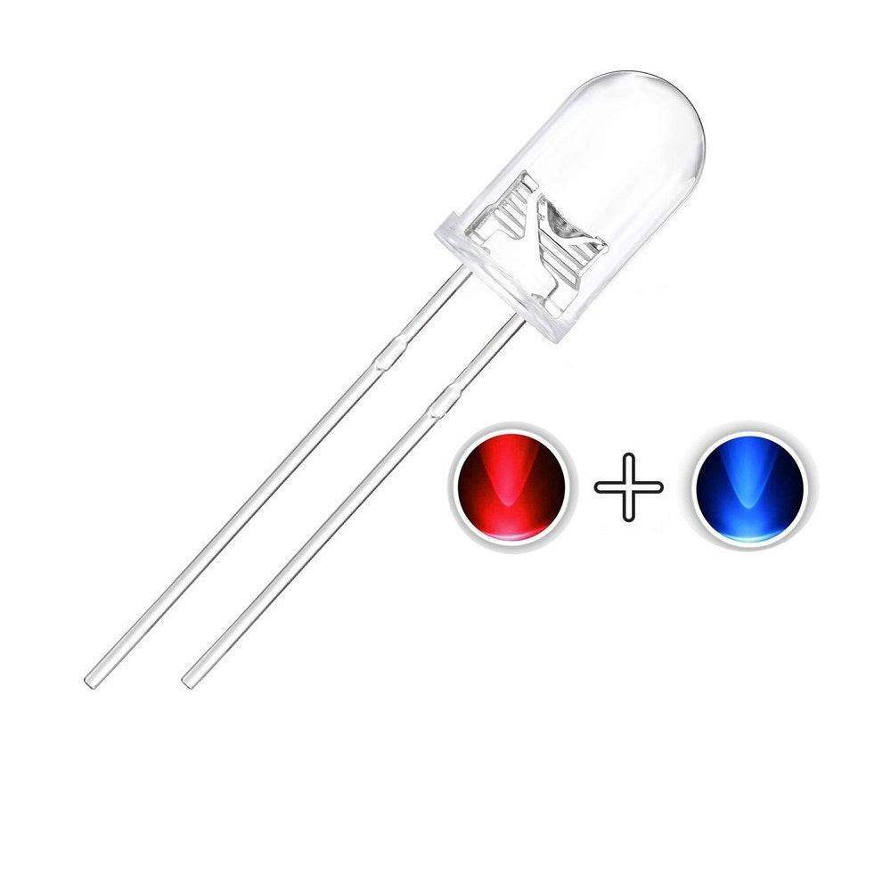
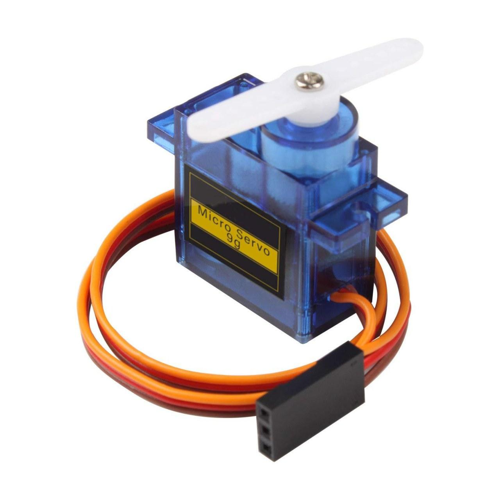
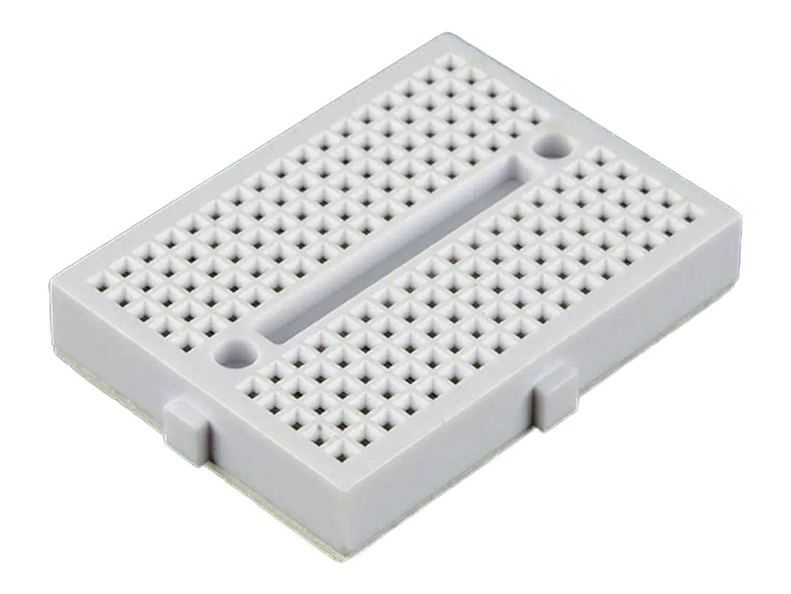

O que é o Fireguard?
Um protótipo que monitora uma cozinha com sensores e emite alertas sonoros e visuais (buzzer, LEDs e mensagens no display LCD) quando detecta condições que podem indicar risco, como a presença de chama ou de gás.
Protótipo experimental · EXPOTEC
Monitoramento e alerta de possíveis situações de risco em cozinhas.
O Fireguard combina um sensor de chama e um sensor de gás com alertas sonoros e visuais (buzzer, LEDs e display LCD) para avisar quando algo foge do normal ao redor do fogão e do botijão.
Aviso: o Fireguard é um sistema experimental de monitoramento e alerta. Ele não combate incêndios e não substitui equipamentos de segurança certificados.
01 · Sobre o projeto
Um protótipo que monitora uma cozinha com sensores e emite alertas sonoros e visuais (buzzer, LEDs e mensagens no display LCD) quando detecta condições que podem indicar risco, como a presença de chama ou de gás.
Acidentes domésticos com fogo e vazamento de gás costumam começar de forma silenciosa e podem passar despercebidos. Um caso ocorrido em setembro de 2026, em Apodi (RN), mostrou como um vazamento de gás durante o preparo de uma refeição pode provocar um incêndio em uma residência, colocando uma família em risco. Esse episódio reforça a importância de sistemas de detecção e alerta para prevenir acidentes domésticos. (BERNARDO, 2026).
Oferecer um aviso rápido e simples de entender, usando componentes acessíveis, para chamar a atenção das pessoas no ambiente antes que a situação avance.
Importante: este é um protótipo experimental, desenvolvido para fins educacionais e de demonstração.
02 · Componentes
Os elementos físicos que formam o protótipo.

Módulo que reage à luz infravermelha emitida por chamas.
Modelo: Sensor de chama infravermelho.
Função: Identifica a presença de chamas por meio da luz infravermelha.

Módulo que mede a presença de gases combustíveis no ar.
Modelo: Sensor de gás MQ2.
Função: Instalado na região do botijão, detecta a presença de gases combustíveis no ambiente, auxiliando na identificação de possíveis vazamentos.

Módulo que emite um sinal sonoro para indicar uma condição de risco.
Modelo: Buzzer.
Função: Emitir um alerta sonoro quando uma condição de risco for detectada.

Módulo de controle que processa as informações dos sensores e aciona os atuadores.
Modelo: Arduino Mega 2560.
Função: Processar as leituras dos sensores e controlar a resposta do sistema em caso de risco.

Módulo que exibe informações sobre o status do sistema e os dados dos sensores.
Modelo: Display LCD.
Função: Exibir informações sobre o status do sistema e os dados dos sensores, com mensagens como "Sistema OK" ou o tipo de alerta detectado. A comunicação com o Arduino é feita por I2C.

Módulo que indica o status do sistema através de uma luz.
Modelo: LED.
Função: Indicar o status do sistema através de uma luz: o LED verde indica monitoramento normal e o LED vermelho indica condição de risco.

Módulo que controla a posição de um mecanismo com base em sinais elétricos.
Modelo: Servo Motor.
Função: Controlar a posição de um mecanismo com base em sinais elétricos. Controla a posição do sensor de chamas.

Módulo que serve como base para a montagem dos componentes eletrônicos.
Modelo: Mini Breadboard.
Função: Servir como base para a montagem dos componentes eletrônicos.
03 · Funcionamento
Do dado do sensor até o alerta, em quatro etapas.
Sensor de chama e sensor de gás medem o ambiente continuamente.
Recebe as leituras e executa o programa do sistema.
Compara as leituras com os limites definidos: o sensor de chama indica presença ou ausência de chama, e o valor lido no MQ-2 é comparado a um limite de gás. [PREENCHER: valor do limite de gás]
Se há condição de risco, o buzzer é acionado, o LED vermelho acende e o display LCD mostra o tipo de alerta.
| Condição | Sensor | Resposta do sistema |
|---|---|---|
| Chama detectada | Sensor de chama | Buzzer com bipes intermitentes, LED vermelho aceso e LCD com a mensagem de alerta de chama. |
| Gás detectado | Sensor de gás | Buzzer com bipes intermitentes, LED vermelho aceso e LCD com a mensagem de alerta de gás. |
| Chama e gás ao mesmo tempo | Ambos | Nível máximo de alerta: buzzer contínuo, LED vermelho aceso e LCD com a mensagem de perigo. |
| Nenhuma condição | Ambos | Buzzer desligado, LED verde aceso, LCD com "Sistema OK" e monitoramento contínuo. |
04 · Arquitetura
Como os componentes se organizam e se conectam.
| Componente | Pino do componente | Pino do microcontrolador |
|---|---|---|
| Sensor de chama | Saída Analógica (A0) | A) |
| Sensor de gás (MQ-2) | Saída analógica | A1 |
| Buzzer | Positivo | 6 |
| LED azul | Ânodo (com resistor em série) | 7 |
| LED vermelho | Ânodo (com resistor em série) | 8 |
| Display LCD (I2C) | SDA | 20 (SDA) |
| Display LCD (I2C) | SCL | 21 (SCL) |
| Servo motor | Sinal | 9 |
| Todos | VCC / GND | 5V / GND do Arduino Mega, distribuídos pela mini breadboard |
05 · Desenvolvimento
Da ideia inicial à programação.
O projeto nasceu da preocupação com acidentes domésticos envolvendo fogo e vazamento de gás na cozinha, como o caso ocorrido em Apodi (RN) em setembro de 2026 (BERNARDO, 2026). A ideia foi criar um protótipo simples, com componentes acessíveis, capaz de avisar as pessoas antes que a situação avance.
Foram estudados o funcionamento dos sensores de chama (KY-026) e de gás (MQ-2) a partir dos datasheets, orientações sobre o uso seguro do gás de botijão (ANP) e recomendações de segurança em ambientes domésticos (Corpo de Bombeiros). Com isso, ficou definido que o sistema monitoraria o fogão e o botijão e emitiria alertas sonoros e visuais.
Os componentes foram escolhidos por serem acessíveis, fáceis de encontrar e compatíveis com o Arduino: sensor de chama e sensor MQ-2 para a detecção, buzzer, LEDs e display LCD para os alertas, servo motor como atuador e Arduino Mega 2560 como controlador, que oferece folga de pinos para todos os módulos.
O circuito foi planejado e simulado no Cirkit Designer. Em seguida, os componentes foram ligados ao Arduino Mega com o apoio de uma mini breadboard para distribuir alimentação e terra, e cada módulo foi testado individualmente antes da integração.
O código foi desenvolvido em C++ utilizando a Arduino IDE e as bibliotecas Servo, Wire e LiquidCrystal_I2C. A programação realiza a leitura dos sensores de chama e gás, compara os valores com limites predefinidos e identifica quatro estados: normal, gás, chama ou gás e chama simultaneamente. Conforme o estado identificado, o sistema controla os LEDs, o buzzer, o display LCD e o servo motor. O desenvolvimento contou com o auxílio de ferramentas de inteligência artificial para explicação e revisão do código.
Após a montagem, foram feitos testes com cada sensor e com o conjunto, ajustando a sensibilidade do sensor de chama, o limite de leitura do MQ-2 e os padrões de alerta. Os resultados observados estão na seção de testes.
06 · Testes e resultados
Os campos abaixo devem ser preenchidos apenas com dados reais, observados nos testes.
| Teste | Como foi feito | Resultado observado | Data |
|---|---|---|---|
| Detecção de chama | Observação da leitura do sensor durante os testes. | O sensor identificou a condição de chama. | 14/10/2026 |
| Detecção de gás | Observação das leituras do MQ-2. | O sensor detectou a presença de gás. | 14/10/2026 |
| Acionamento do buzzer | Observação do acionamento do buzzer durante os testes. | O buzzer foi acionado conforme esperado. | 14/10/2026 |
| Tempo de resposta | Observação do intervalo entre a identificação da condição e a resposta do sistema. | 300ms, tempo máximo atingido nos testes. | 14/10/2026 |
| Mensagens do display LCD | Verificação das mensagens exibidas em cada estado. | As mensagens corresponderam aos estados identificados. (na segunda tentativa) | 14/10/2026 |
| Indicação por LEDs | Verificação dos LEDs durante os diferentes estados | Azul no estado normal e vermelho nas condições de alerta. | 14/10/2026 |
07 · Equipe
Quem desenvolveu o Fireguard.
Líder
Programador
Programador
Programador
Programador
Programador
Instituto Federal de Educação, Ciência e Tecnologia do Rio Grande do Norte (IFRN). Professor(es): Carlos Dayvinson / Francisco Ary. Ano: 2026.
08 · Referências
Fontes consultadas durante o desenvolvimento do projeto.